2130B automatic transmission components
- Path
- Descriptions > 21 GEARBOX > 2130 AUTOMATIC TRANSMISSION AND DIFFERENTIAL > 2130B automatic transmission components
- Kind
- system description
- Applies to
- engines: 2.5 V6; all production periods
- Interactive page
- https://sloeber94.github.io/elrnDB-a156/en/#/3232906
Applies to: engines: 2.5 V6; all production periods; only with equipment: Automatic transmission
TORQUE CONVERTER
It is fitted between the engine and the gearbox in place of the conventional disc clutch.
The torque converter is designed to ensure a smooth (hydraulic) connection between the engine and the gearbox.
The torque converter consists of:
- a casing (1) containing the oil and the various components
- a pump impeller (2) connected to the crankshaft and to the oil pump
- a turbine impeller (3) connected to the gearbox input shaft
- a stator (4), fitted on the free wheel, which has the task of directing the flow of oil to the pump impeller
- a torque converter lock-up device (5) operated by the CAE control unit via a solenoid valve and a regulation valve.
- a clutch cover (6).
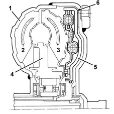
The converter operates in two stages:
- converter stage, where it multiplies the torque
- coupler stage, where it transmits the torque with an efficiency of 98% or 100% according to whether or not the lock-up is activated.
Torque converter operation
As soon as the engine is started up, the pump impeller behaves like a centrifugal pump and the oil is thrust by the centrifugal force into the radial ducts.
The oil comes out of the pump impeller vanes, is directed to the turbine impeller where it flows through the ducts from the edges towards the centre.
If the oil were to flow directly to the pump impeller it would meet the impeller vanes in the opposite direction to the direction of rotation.
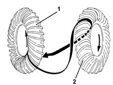
1, Pump impeller 2, Turbine impeller
To avoid this, there is a "stator" between the two impellers.
The stator has the task of directing the flow of oil to the pump impeller in the direction of rotation of the impeller.
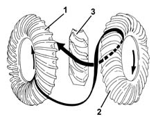
1, Pump impeller 2, Turbine impeller 3, Stator
In this way, the energy of the oil on entering the pump impeller is added to the kinetic energy of the pump impeller possessed at that moment.
The greater the difference in speed between the pump and the turbine, the greater the torque multiplication (max. with the turbine stationary).
When the turbine starts to assume speed, the multiplication of the torque gradually decreases.
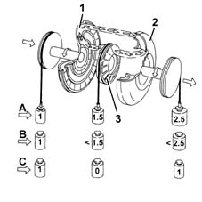
A, During starting B, Intermediate speed C, Coupling stage 1, Pump impeller 2, Turbine impeller 3, Stator
Lock-up clutch
In 1 st gear, 2 nd gear and reverse, drive torque is transmitted from the torque converter.
In 3 rd and 4 th gear, torque is firstly transmitted hydraulically via the converter and then mechanically via the lock-up clutch.
The clutch connects the converter pump and turbine to eliminate internal converter slide as speed picks up and form a mechanical coupling between engine and gearbox mainshaft.
The torque converter can be locked to increase transmission performance at high speeds and reduce fuel consumption on long motorway journeys.
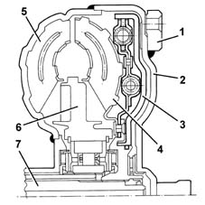
1, Engine flywheel attachments 2, Case integral with pump 3, Lock-up clutch 4, Turbine 5, Pump 6, Stator 7, Mainshaft
The lock-up clutch is engaged by the CAE control unit by solenoid SL in 3 rd and 4 th gear when the drive torque need no longer be multiplied by the torque converter.
Solenoid SL cuts off oil flow to the rear clutch surface to reduce pressure, while pressure inside the converter continues to act on the front surface.
The clutch fitted to the turbine hub is then pressed against the case integral with the converter pump to lock the converter.
Oil pump
This gear pump is fitted between the torque converter and the gearbox casing and is controlled by the converter pump impeller (6).
The oil, under pressure, engages the gears and lubricates the various gears.
The pump is made up of two eccentric gears:
- drive gear (7) with outer teeth
- driven gear (8) with inner teeth.
The two gears are housed in a pump casing (3) which contains an asymmetrical separator which creates two different chambers: an inlet chamber (1) and a supply chamber (2).
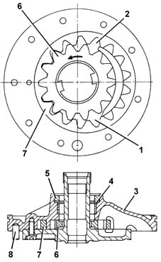
1, Inlet 2, Supply 3, Pump casing 4, Washer 5, Gasket 6, Drive gear (operated by the torque converter pump impeller) 7, Driven gear 8, Centering pin
Drive transmission
We will now examine drive transmission under different driving conditions and describe the control procedures required to achieve different transmission ratios.
The following table shows which components are activated according to drive engaged and gear selection lever position.
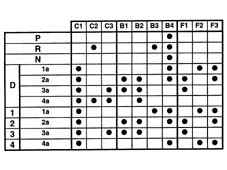
C, Clutches B, Brakes F, Free wheels
Neutral (gear selection lever in n position)
The mainshaft turns clockwise
All the clutches and multidisc brakes are disengaged so that drive is not transmitted to the epicyclic gear train and then the layshaft.
Belt brake B4 locks differential gear S3 of train P3 and prevents it from turning.
The parking lock is disengaged and planet gears ST3 are free to turn around differential S3; the car will move if it is on a gradient.
Parking (gear selection lever in position p)
Differs from the previous situation in that the parking lock prevents the vehicle from moving.
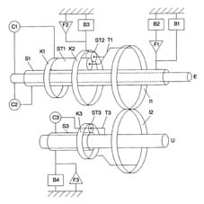
First speed (gear selection lever in position d-1 or 1 st manual speed)
Main shaft
Main shaft E turns clockwise and is coupled by clutch C1 to ring gear K1 of rear gear train P1, which also turns clockwise.
Long planet gears ST1, common to gears P1 and P2, turn clockwise.
Short planet gears ST2 of gears P2 thus turn anticlockwise and are arranged clockwise on ring gear K2 of front gear train P2, which is prevented from turning by brake B3.
Gear carrier T1, locked to central drive gear I1, turns clockwise at a speed lower than that of the mainshaft.
Layshaft
Central drive gear I2, locked to ring gear K3 of gear train P3, turns anticlockwise and causes planet gears ST3 of gear train P3 to turn anticlockwise too. These are arranged anticlockwise on differential ST3, locked by brake B4 and freewheel F3.
Gear carrier T3, locked to layshaft U, to which the differential pinion is fitted, turns anticlockwise at a speed lower than that of central driven gear I2.
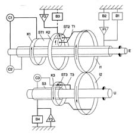
Second gear (gear selection lever in position d-2) or 2 nd manual gear).
Main shaft
Main shaft E turns clockwise and is coupled by clutch C1 to ring gear K1 of rear gear train P1, which also turns clockwise.
Planet gears ST1, common to gear trains P1 and P2, turn clockwise and are arranged clockwise on differential S1, common to gear trains P1 and P2, which are prevented from turning in either direction by brakes B1 and B2 and freewheel F1.
Gear carrier T1, locked to central drive gear I1, turns clockwise at a speed lower than that of the mainshaft.
Layshaft
Central drive gear I2, locked to ring gear K3 of gear train P3, turns anticlockwise and causes planet gears ST3 of gear train P3 to turn anticlockwise too. These are arranged anticlockwise on differential ST3, locked by brake B4 and freewheel F3.
Gear carrier T3, locked to layshaft U, turns anticlockwise at a speed lower than that of central driven gear I2.
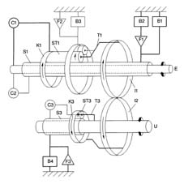
Third speed (gear selection lever in position d-3 or 3 rd manual gear)
Main shaft
Main shaft E turns clockwise and is coupled by clutch C1 to ring gear K1 of rear gear train P1, which also turns clockwise.
Planet gears ST1, common to gear trains P1 and P2, turn clockwise and are arranged clockwise on differential S1, common to gear trains P1 and P2, which are prevented from turning in either direction by brakes B1 and B2 and freewheel F1.
Gear carrier T1, locked to central drive gear I1, turns clockwise at a speed lower than that of the mainshaft.
Layshaft
Central driven gear I2, locked to ring gear K3 of gear train P3, turns anticlockwise.
Clutch C3 couples differential S3 and gear carrier T3 of gear train P3 to prevent them from turning in relation to one another. Planet gears ST3 cannot turn on their axes and thus the entire gear train P3 turns as a single block.
Gear carrier T3, locked to layshaft U, turns anticlockwise at the same speed as central driven gear I2.
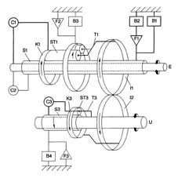
Fourth gear (gear selection lever in position d-4 or 4 th manual speed).
Main shaft
Mainshaft E turns clockwise and is coupled by clutches C1 and C2 respectively to ring gear K1 of rear gear train P1 and differential S1 common to gear trains P and P2. Planet gears ST1 and ST2 cannot turn on their axes and gear trains P1 and P2 turn as a single block.
Gear carrier T1, locked to central drive gear I1, turns clockwise at the same speed as the mainshaft.
Layshaft
Central driven gear I2, locked to ring gear K3 of gear train P3, turns anticlockwise.
Clutch C3 couples differential S3 and gear carrier T3 of gear train P3 to prevent them from turning in relation to one another. Planet gears ST3 cannot turn on their axes and thus the entire gear train P3 turns as a single block.
Gear carrier T3, locked to layshaft U, turns anticlockwise at the same speed as central driven gear I2.
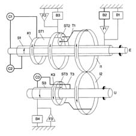
Reverse (gear selection lever in position r)
Main shaft
Mainshaft E turns clockwise and is coupled by clutch C2 to differential S1 common to gear trains P and P2, which also turn clockwise.
Planet gears ST1, common to gear trains P1 and P2, turn anticlockwise
Planet gears ST2 of gear train P2 therefore turn clockwise and are arranged anticlockwise on ring gear K2 of front gear train P2, which is prevented from turning by brake B3.
Gear carrier T1, locked to central drive gear I1, turns anticlockwise at a speed lower than that of the mainshaft.
Layshaft
Central driven gear I2, locked to ring gear K3 of gear train P3, turns clockwise to turn planet gears ST3 of gear train P3 clockwise as well. These are arranged clockwise on differential S3 locked by brake B4 and freewheel F3.
Gear carrier T3, locked to layshaft U, turns clockwise at a speed lower than that of central driven gear I2.
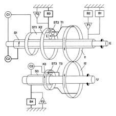
Epicyclic gear train
This automatic transmission uses three epicyclic gear trains to produce five transmission ratios (4 forward speeds and reverse).
Rear gear train P1 is a single epicyclic gear train consisting of a pinion or differential S1 (1), three long planet gears ST1 (3) integral with gear carrier (5) and a ring gear K1 (2).
Front gear train P2 consists of a double epicyclic train made up of pinion or differential S1 91), three long internal planet gears ST1 (3), six short external planet gears (4) integral with gear carrier (5) and ring gear (K2) (6).
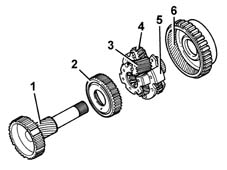
1, Shared differential S1 2, Ring gear K1 of gear train P1 3, Shared long planet gears ST1 4, Short planet gears ST2 of gear train P2 5, Gear carrier 6, Ring gear K2 of gear train P2
Gear train P3 is a single epicyclic gear train made up of a pinion or differential S3 (1), three planet gears ST3 (2) integral with gear carrier (3) and ring gear K3 (4).
This gear train is located on the layshaft.
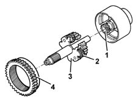
1, Differential S3 2, Planet gears ST3 3, Gear carrier 4, Ring gear
Clutches
There are three, multplate oil bath clutches comprising, alternately:
- driven plates (2) lined with material with a high friction coefficient
- steel drive plates (2)
The clutches are activated by the automatic transmission hydraulic control system solenoid unit.
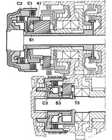
Clutch C1 prevents mainshaft and ring gear K1 of gear train P1 from turning in relation to one another.
Clutch C2 prevents mainshaft and differential S1 common to gear trains P1 and P2 from turning in relation to one another.
Clutch C3 prevents differential S3 and the gear carrier of gear train P3 on the layshaft from turning in relation to one another.
Brakes
There are four: three multidisc oil-bath type and one band brake.
The brakes are activated by the automatic transmission hydraulic control system solenoid unit.
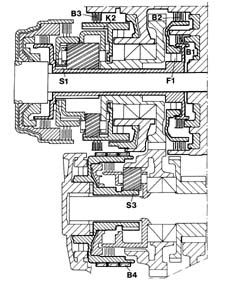
Brake B1 locks the rotation of differential S1 common to gear trains P1 and P2.
Brake B2 locks the rotation of the outer race of freewheel F1 to prevent differential S1 common to gear trains P1 and P2 from turning anticlockwise.
Brake B3 locks the rotation of ring gear K2 of gear train P2.
Band brake B4 prevents differential S3 of gear train P3 from turning.
Freewheels
These consist of two concentric races and a cage enclosing a set of asymmetrical dowels.
The dowels allow both races to turn freely in one direction only. If they are turned the other way, they bind to form a reaction couple.
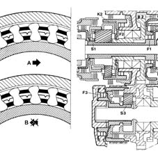
Freewheel F1 prevents anticlockwise rotation of differential S1 common to gear trains P1 and P2, when brake B2 is engaged.
Freewheel F2 prevents anticlockwise rotation of ring gear K2 of gear train P2.
Freewheel F3 prevents clockwise rotation of differential S3 of gear train P3.
Solenoids for engagement of speeds s1 and s2
These are located in the front part of the automatic transmission, where they implement gear changes.
When the normally closed (N.C.) solenoids receive a signal from the CAE control unit, they change position to engage the different transmission ratios.
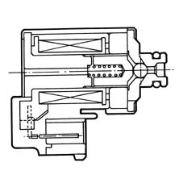
Lock-up clutch solenoid sl
This is located in the front part of the automatic transmission, where it locks the torque converter.
The solenoid is controlled by a duty-cycle signal from the CAE control unit. It cuts off the oil flow to modulate the outlet pressure acting on the rear clutch surface.
The clutch is fitted to the turbine hub. It is pushed by pressure acting against the front inner surface of the converter, against the case interal with the converter pump to lock the converter.
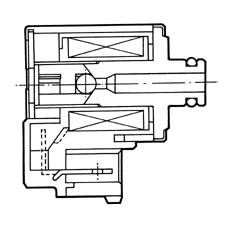
Pressure control solenoid sth
This is located in the front part of the gearbox. It controls hydraulic pressure changes.
The solenoid is controlled by a duty-cycle signal emitted by the CAE control unit. It regulates the hydraulic pressure acting on the brakes and clutches in order to:
- reduce gear engagement times when cold
- reduce jerkiness when reverse is engaged.
The solenoid regulates control pressure according to throttle opening and car speed.
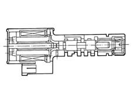